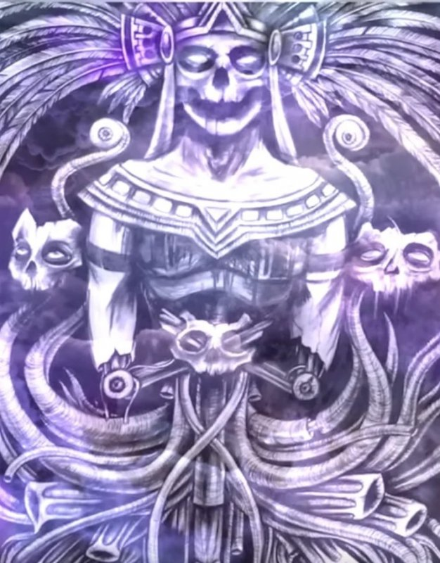

<div class="content">
<div class="scroller">
<h2>Восстановление(Стирание негатива)</h2>

<p style="font-size: 1rem; padding: 0 10px; color:blue;">
                  Использование: человек, использующий данное заклинание будет
                  транслировать 13 аркан и тем самым уничтожать(останавливать
                  любые мыслеформы) обеспечивая очищение предметов, артефактов
                  или организмов от любых мыслеформ!</p>
<p style="font-size: 1rem; padding: 0 10px; color:blue;">
                  Создаем образ вращающегося колеса, которое мы тормозим на
                  Вишудхе и это создает остановку времени при которой мыслеформы
                  разрушаются! Колесо это чакра, и ее торможение вызывает
                  остановку процессов мышления-13 аркан, который транслируем и
                  фиксируем левой рукой на мандале в прямом круге. Положив левую
                  руку на мандалу правой выполняем направленную трансляцию. </p>
<p style="font-size: 1rem; padding: 0 10px; color:blue;">
                  Формула заклинания: Я направляю энергию 13 аркана и торможу
                  все мыслеформы в диапазоне моего излучения. Я сканирую и
                  нахожу области негативной энергии в моем ментальном поле или
                  месте куда я фокусирую свое внимание и транслирую туда эту
                  энергию останавливая время в этой выделенной области. </p>
<p style="font-size: 1rem; padding: 0 10px; color:blue;">Любой
                  процесс происходит во времени и потому его остановка разбивает
                  вдребезги любую негативную мыслеформу, подобно тому как поток
                  воды разбивается о камень, огибает его и менет свое
                  направление! Направляя эту энергию на предмет я останавливаю
                  любую запись на нем, делая его стерильным, а направляя на
                  участок поврежденной ткани организма я устраняю различного
                  рода опухоли или воспаления. </p>
<p> </p>
<p style="font-size: 1.2rem; color:magenta; padding: 0 10px;">
                  Ритуал: Смерть скачет к Вам на своем конеи вручает Вам свою
                  косу, не выпуская ее из руки. Вы садитесь на лошадь позади
                  Смерти, удерживая косу в руках.Смерть в три раза превышает Вас
                  ростом, а ее конь просто гиганстских размеров.</p>
<p style="font-size: 1.2rem; color:magenta; padding: 0 10px;">Сила
                  Смерти в Ваших руках. Ее черный плащ с золотыми нарисованными
                  звездами накрывает Вас, и вы ощущаете Величие Сил космоса по
                  сравнени с которрым любая жизнь просто крохотная искорка
                  света. Смерть - работник процесса энтропии. </p>
<p style="font-size: 1.2rem; color:magenta; padding: 0 10px;">Она
                  освобождает место от старого и изжившего себя для нового. Вы
                  чувствуете себя работником эволюции.Смерть в Ваших руках. </p>
<p style="font-size: 1.3rem; font-weight: bold; padding: 0 10px;">
                  Защитное заклинание 13 аркана "Пляска смерти"<br/>
                  ЕНО ЕСО ЕРИ. ЕКУН ЕРО ИСС ВИСС СО ВАРИ. ЕР ЕГ. ЕТТОРО ЕТТОРИ
                  ЕЛЛОР. НО СКРА ГАЙ. </p>
<p style="font-size: 1rem; padding: 0 10px; color:blue;">
                  Настраиваемся на состояние остановки времени, делаем мандалу и
                  связываем полученное состояние с синей чакрой скарабея. </p>
<div style="background-color:#fafaf7; color:bclack; border:1px solid silver; border-radius:10px;">Запрограммировать
                  управляющего иффрита на выполнение функции стирания негатива,
                  привязав к цвету кнопки панели управления(соответсвует цвету
                  фона настоящей надписи). </div>
</div>
</div>

